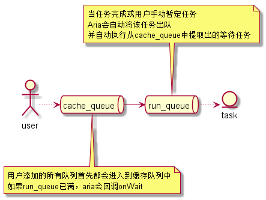
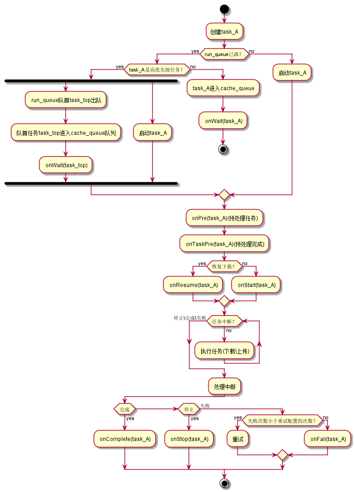

任务说明
在Aria中，根据功能的不同划分了6种不同的任务，分别是：
- HTTP下载任务
- HTTP组合任务
- FTP下载任务
- FTP文件夹下载任务
- HTTP上传任务
- FTP上传任务
普通任务
其中HTTP下载任务、FTP下载任务、HTTP上传任务、FTP上传任务为普通任务。所谓普通任务就是一个链接对应一个文件，如：
HTTP下载任务，一个下载地址对应一个文件下载
特殊任务
而HTTP组合任务属于特殊任务，由多个HTTP下载任务组合而成，共享同一进度，如：
如下载一个视频A，还需要下载视频文件、字幕、视频截图，这三个文件对应的都属于视频A，需要共用同一进度条，那么这时应该使用HTTP组合任务
FTP文件下载任务，意思是，传入一个FTP文件夹地址，将下载该文件夹下对应的所有文件，进度为: 已下载的文件长度的总和
任务队列说明

在Aria中，所有的上传\下载操作都是一个任务，用户添加的任务时，Aria首先都会进入到cache_queue中：
- 如果run_queue没满，则会马上执行该任务
- 如果run_queue已满，aria会回调onWait方法
当任务完成、停止、失败，run_queue将会将任务出队，并回调相应的方法，然后从cache_queue中提取等待中的任务执行
任务的生命周期

如上图所示，每一个任务都有自己的生命周期，任务处于生命周期不同的阶段回调对应的方法